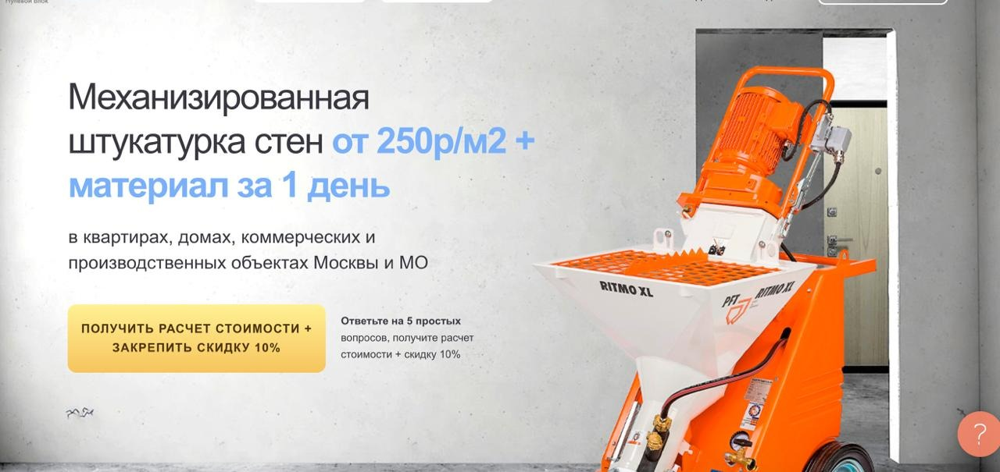
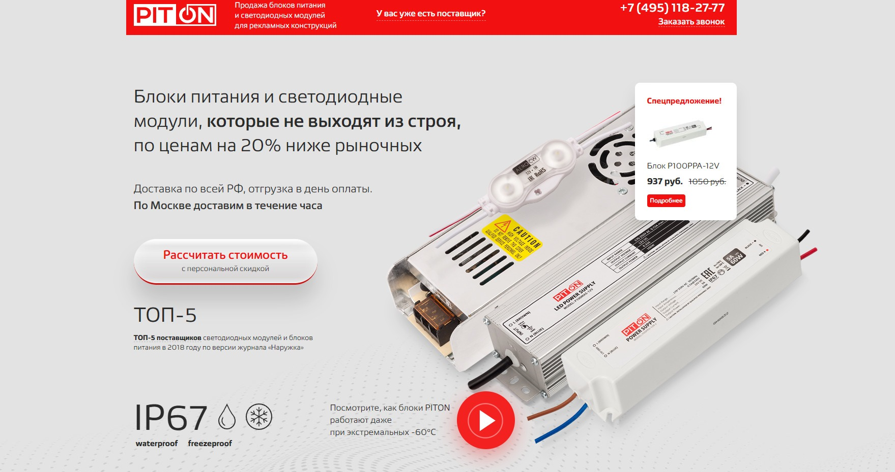
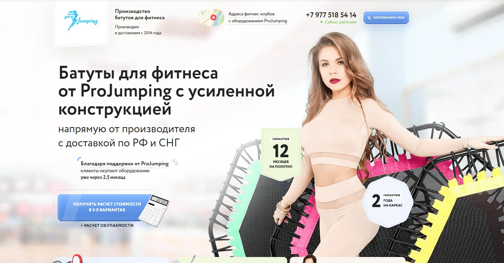
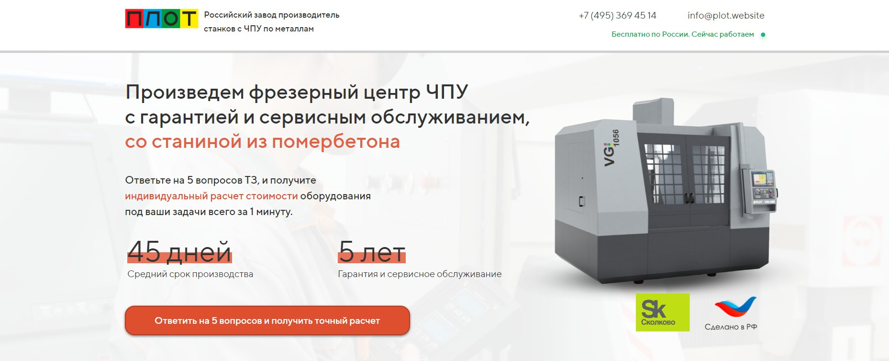
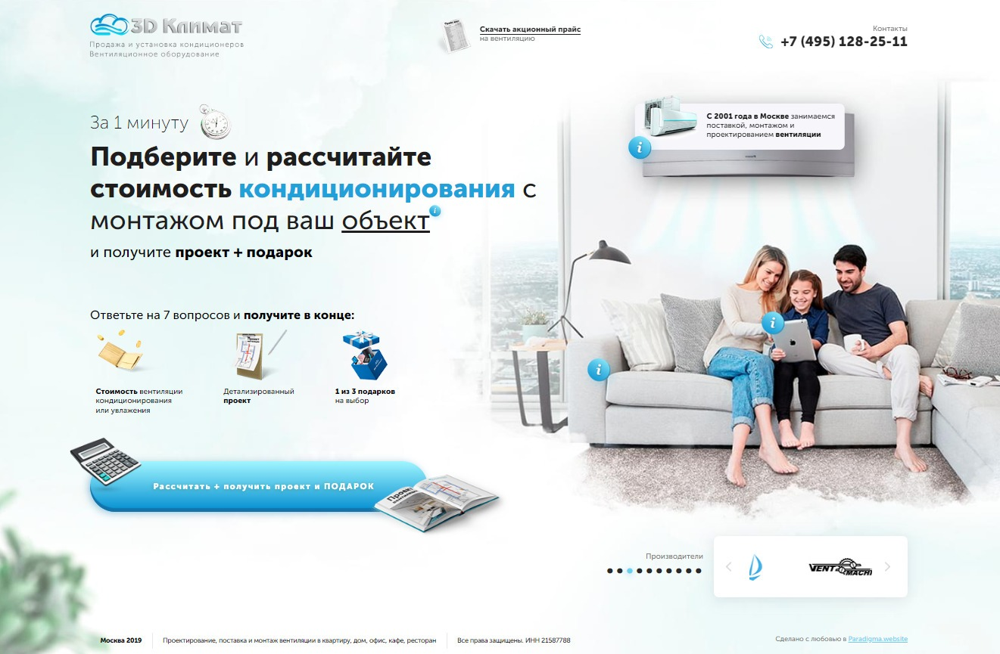
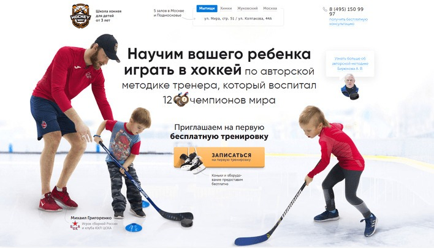

Блог о платном трафике
Примеры продающих сайтов: оффер, доверие и конверсия
Продающий сайт не обязан быть сложным. В первые секунды человек отвечает себе на два вопроса: насколько ему подходит предложение и можно ли доверять этой компании. Если ответа нет, даже дорогой трафик не спасет конверсию.
Что должно быть на первом экране
Первый экран не должен пересказывать всю историю бизнеса. Его задача - быстро показать, что именно предлагает компания, кому это подходит, какой результат или условие получает клиент и что можно сделать дальше.
Сильный оффер обычно содержит конкретику: продукт или услугу, цену или выгоду, срок, географию, гарантию либо понятное отличие. Рядом - одно действие: рассчитать стоимость, подобрать вариант, получить каталог или записаться на консультацию.
Маркетинговые модели вроде AIDA помогают выстроить путь пользователя, но не заменяют предложение. Сначала сайт должен зацепить точным оффером, затем снять сомнения доказательствами.
Примеры сильного оффера
В этих примерах посетитель сразу понимает предмет предложения и причину оставить заявку.


Расчет, квиз и подарок
Квиз, калькулятор или подарок работают не сами по себе. Они снижают порог первого действия, когда посетитель пока не готов звонить или оставлять обычную заявку. Важно честно выполнить обещание: прислать расчет, каталог, проект или подарок именно на заявленных условиях.



Доверие: люди, опыт и доказательства
Даже самый сильный оффер не даст результата, если посетитель не понимает, кто выполнит работу и почему компании можно доверять. Лучше всего работают реальные подтверждения: сотрудники, производство, объекты, результат услуги, отзывы, рейтинги, документы, реквизиты, гарантии и понятные контакты.

Что проверить перед запуском рекламы
Перед тем как вести трафик на посадочную страницу, проверьте первый экран на простом уровне: понятны ли предложение и следующий шаг без прокрутки, можно ли увидеть реальные доказательства работы и нет ли противоречий между рекламным объявлением и сайтом.
Для рекламы это особенно важно. Объявление формирует ожидание, а сайт либо подтверждает его, либо теряет человека. Подробнее о выборе посадочной страницы - в статье «Что такое лендинг в Яндекс Директе и какой сайт выбрать для рекламы».
После запуска нужно оценивать не только клики, но и действия на сайте, заявки и их качество. Основы расчета разобраны в материале «Конверсия в Яндекс Директ: как ее считать». Если первый шаг сделан через квиз, полезно отслеживать прохождение этапов - для этого пригодится статья о целях Marquiz в Яндекс Метрике.
Главное
Продающий сайт не строится вокруг модной анимации или набора блоков. В основе - сильный оффер на первом экране и доверие к компании. Все остальное должно помогать посетителю быстрее понять предложение, снять сомнения и сделать следующий шаг.